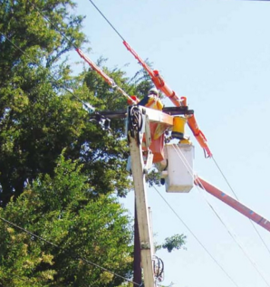
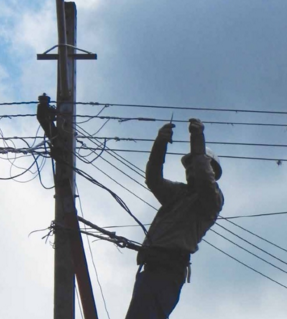
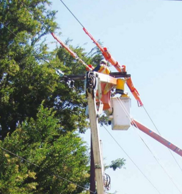
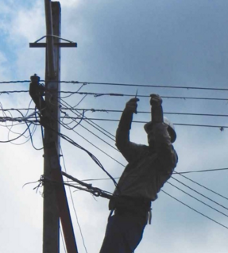

Las Tecnologias de Información y Comunicación (TIC) como parte omnipresente y dominante de la vida moderna
Valor agregado de los datos
Analitics
La Tecnología se entrelaza con cada aspecto del negocio.
Impulsa el crecimiento empresarial, la distribucion mundial del trabajo y Estimula la competicion
Fuente: http://www.citrix.com
Los operadores de telecomunicaciones realizan grandes inversiones en plataformas e infraestructura.
EL nucleo de las nuevas tecnologias de la informacion y comunicacion
Fuente: http://www.negocios360.mx
Estas redes de comunicaciones, su infraestructura y tecnologia permiten que las innovaciones tengan amplias aplicaciones, practicamente en todos los ambitos sociales
Fuente: http://www.credibanco.com
En el mundo se realizan cambios importantes en el sistema de distribución de la energia eléctrica
Fuente: http://www.cronista.com
Las TIC's traen consigo desafíos y ventajas, éstas seran las aliadas para la producción de energia a nivel global
Fuente: http://enterprise.huawei.com/topic/2015powersummit_LA/
El construir una red eléctrica completamente conectada es prerrequisito para proveer mas seguridad, confianza y mejor calidad de equipos electricos
Fuente: http://enterprise.huawei.com/topic/2015powersummit_LA/
Fuente: SENDIN, Alberto. Redes y Sistemas para el Despliegue de una Red Electrica Inteligente

La distribución de la energía eléctrica en el Paraguay se encuentra a cargo de la institución pública ANDE
 



La cantidad acumulada de clientes conectados en el país asciende
162 nuevos transformadores montados
1.571 km de redes de media tensión
731 km de redes de baja tensión
Fuente: http://www.ande.gov.py
Fuente: http://www.abc.com.py
Fuente: http://www.hoy.com.py

Fuente:http://www.ande.gov.py/generacion.php
Fuente:http://www.ande.gov.py/comercial_prime.php
 Aumento de la demanda por el aumento de la poblacion y los niveles economicosDeficit en el manejo de la cargaTransformadores con fallas o sobrecargadosInfraestructura danada por condiciones climaticasCarencia de un sistema de análisis y supervisión en comunicación con una central de control y los abonadosEl usuario final no supervisa su consumoManipulacion de los medidores
Aumento de la demanda por el aumento de la poblacion y los niveles economicosDeficit en el manejo de la cargaTransformadores con fallas o sobrecargadosInfraestructura danada por condiciones climaticasCarencia de un sistema de análisis y supervisión en comunicación con una central de control y los abonadosEl usuario final no supervisa su consumoManipulacion de los medidoresFuente: http://www.paraguay.com/nacionales/ande-planea-instalar-medidores-inteligentes-en-asuncion-92519
Contiene piezas mecánicasNo posee un puerto de comunicaciónSolo posee la capacidad de registrar un único parámetroCompatibles con protocolos estándaresPuerto Óptico (Por defecto) y RS485 (bajo demanda)Es capaz de registrar más de un parametroPrecisión AltaCapaz de manejar algoritmos complejosSin esta plataforma la institucion no podra dar solucion a muchos de los problemas del sector operativo.
También persistirán los inconvenientes en la administracion de mediciones y facturacion que presentan las redes tradicionales
Fuente: http://e.huawei.com/en/solutions/industries/smart-grid/consumption/ami
Son aquellas que cuentan con una gran cantidad de puntos de medición que pueden estar ubicados a grandes distancias deben permitir el registro y extracción de datos en tiempo real y facilitar el servicio de consulta remota o presencial.
La inexistencia de un sistema capaz de monitorear el consumo y detectar los inconvenientes citados, produce un déficit en el control energético con un tiempo muy prolongado de reacción en la resolución de problemas, por parte de la entidad encargada del suministro eléctrico.
Este proyecto tiene como finalidad proporcionar a la empresa proveedora de electricidad y a sus abonados, una herramienta de monitoreo, con el propósito de acceder en tiempo real al consumo y la demanda de energía eléctrica en cada hogar.
Desarrollar un sistema de Monitoreo que facilite el control de la demanda y el consumo de la energia electrica en cada hogar
Estudiar los protocolos y estándares que maneja un medidor inteligente, para el desarrollo del sistema
Diseñar una interfaz óptica encargada de recolectar las mediciones de un medidor inteligente
Desarrollar una interfaz web para el monitoreo del consumo eléctrico, proporcionando un acceso flexible tanto al proveedor como al cliente
Desarrollar una base de datos capaz de almacenar las mediciones del consumo electrico de los usuarios
Realizar pruebas de campo del diseño propuesto
Fuente: http://openenergymonitor.org/emon/guide
Fuente: Elaboraión propia


Fuente: Elaboraión propia


Fuente:http://www.amazon.com/SMAKN%C2%AE-Adapter- Serial-Converter-Module/dp/B010723BCE/ref=sr_1_3?ie=UTF8&qid=1454098083&sr=8-3&keywords=rs485+to+ttl
| Especificaciones Técnicas | |
|---|---|
| Alimentación | 3.3V, perfectamente compatible con fuentes de 5V |
| Nivel de señales | 3.3V, compatibles con señales de 5V |
| Temperatura de operación | (-40 ~ +85)°C |
| Indicadores Rx, Tx | señales de luz |
| Precio | 9 $ |

Fuente:http://es.aliexpress.com/item/Infrared-Communication- Optical-Probe- for-Energy-Meters/32272868915.html
| Especificaciones Técnicas | |
|---|---|
| Estandar | IEC 62056-21(IEC 1107) |
| Consumo | < 100mA |
| Voltaje de funcionamiento | 5 V |
| Transmision de datos | 19200 bit/s |
| Interfaz eléctrica | USB 2.0 |
| Longitud de Onda | 880 nm |
| Precio | 80 $ |


Fuente: Elaboración Propia


Fuente: International Standard IEC 62056-21, First Edition 2002-05
Disposicion de los componentes
Dimensiones del contenedor
Dimensiones del anillo magnético

Fuente: https://www.arduino.cc/en/Main/Arduino-BoardUno

Fuente: https://www.arduino.cc/en/Main/Arduino-BoardMega2560

Fuente: http://www.ti.com/tool/MSP-EXP430G2#1

Fuente: http://www.cypress.comproducts32-bit-arm-cortex-m0-psoc-4

Fuerza: http://www.mikroe.com/pic/clicker/

Fuente: http://eleshop.jp/shop/g/gE7A124/


Fuente: http://www.techmount.com.br/adaptador-xbee-zigbee-regulador-de-tensao-e-led-para-pci-ou-protoboard


| ZigBee (WPAN) | Bluetooth (WLAN/WPAN) | WiFi (WLAN) | |
|---|---|---|---|
| Protocolo | IEEE 802.15.4 | IEEE 802.15.1 | IEEE 802.11.x |
| Velocidad | 250 Kbps | 1 Mbps | Hasta 54 Mbps |
| Consumo | TX 35 mA | TX 40 mA | TX > 400 mA |
| Standby 3 µA | Standby 200 µA | Standby 20 mA | |
| Cantidad de Nodos | Soporta 254 nodos por subred, con capacidad de formar hasta 255 subredes | Soporta 8 nodos | Soporta gran cantidad de nodos conectando puntos de acceso |

Fuente: https://en.wikipedia.org/wiki/XBee#/media/File:Pair_of_XBee_Series_2s_with_Whip_Antennas.jpg


Fuente: http://www.elektronikpraxis.vogel.de/index.cfm?pid=7525&pk=455282&fk=754711&type=article#3.jpg

Fuente: http://www.ebay.de/itm/pcDuino3-Android-4-0-ICS-MiniPC-Header-Arduino-Google-TV-HDMI-MK802-Raspberry-Pi-/231194673354.jpg

Fuente: http://techfreak.pl/calkiem-mocny-mini-komputer-beaglebone-black/.jpg

Fuente: http://www.dhgate.com/product/raspberry-pi-enhanced-version-cubieboard/163637357.html.jpg

Fuente: http://com.odroid.com/sigong/blog/blog_list.php?bid=131.jpg

Fuente: http://humboldtmcu.blogspot.com/2014/07/will-windows-iot-and-galileo-survive.html.jpg

Fuente: http://www.slideshare.net/ariannaschlegel/small-electronics-for-your-makerspace-2-clc-trendspotting-26-march-2014.jpg

Fuente: https://shopotam.ru/catalog/Computers_Tablets_And_Networking/Computer_Components_And_Parts/Motherboard_And_Cpu_Combos/291231691255-item.html.jpg

Fuente: http://www.cnet.com/products/raspberry-pi-model-b-plus/


| Base de datos Relacionales | No Relacionales |
|---|---|
| Representan los datos en forma de tablas que componen n filas. | Representan los datos en pares de clave-valor, documentos, grafos; cada uno con un propósito diferente. |
| Tienen un esquema predefinido | Tienen un esquema dinámico para datos no estructurados |
| Son verticalmente escalables. Significa que pueden gestionar el aumento de la carga mediante el incremento de la CPU, RAM, SSD, etc, en un único servidor. | Son horizontalmente escalables. En caso que esxista incremento en el tráfico de datos; son capaces de gestionar la instalación de nuevos servidores sin que el proceso de producción se vea afectado |
| Utiliza SQL (Structured Query Languaje) para la definición y manipulación de datos | Las consultas de centran en la colección de documentos. También llamado UnQL (Unstructured Query Languaje) |
| Buena opción para consultas complejas de forma intensiva. | No es buena opción para consultas complejas. |
| No es la mejor opción para el almacenamiento de datos jerárquicos. | Mejor adaptación en el almacenamiento de datos jerarquicos, debido a la utilización del par clave-valor, similares a los datos JSON |
| Precentan cierta latencia al momento de procesar o acceder a grandes volúmenes de datos | Como el modelado de datos es simple, el procesamiento y acceso a los mismos se realiza con una gran velocidad. Incluso cuuando se manejan grandes volúmenes de información |


Fuente: Elaboración Propia

Fuente:Elaboración propia
El dispositivo de lectura inicia la comunicación con el medidor


El medidor debe responder con un Mensaje de Identificación


Error! No hay mensaje

Detección del mensaje

Fin de Transmisión
El dispositivo de lectura responde un ACK negociando la velocidad y el modo de operación


Modo Fabricante
Modo Lectura
Modo Programación
El medidor retorna el bloque de datos

No se detecto el caracter de inicio
Caracter de inicio
Mapeo de datos, comprobacion del Bloque de datos


Fin de Transmisón


Use a spacebar or arrow keys to navigate